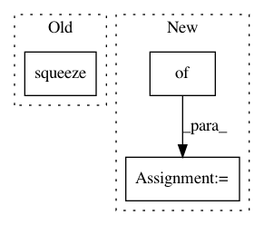

01bb506231eb660931b555034fbabe154ffb8c6c,examples/gpt-2/utils/model_utils.py,,_get_assignment_map_from_checkpoint,#Any#Any#Any#,113
Before Change
else:
local_tensor_name = _map_tensor_names(ckpt_tensor_name)
data = ckpt_names_vs_vals[ckpt_tensor_name]
_assign_by_name(sess, local_tensor_name, np.squeeze(data))
def init_gpt2_checkpoint(sess, init_checkpoint):
After Change
Load pretrained parameters to texar model
assignment_map = {}
reader = tf.train.NewCheckpointReader(init_checkpoint)
var_names_list = reader.get_variable_to_shape_map().keys()
ckpt_names_vs_vals = {}
In pattern: SUPERPATTERN
Frequency: 3
Non-data size: 3
Instances
Project Name: asyml/texar
Commit Name: 01bb506231eb660931b555034fbabe154ffb8c6c
Time: 2019-05-09
Author: shibiao.nong@petuum.com
File Name: examples/gpt-2/utils/model_utils.py
Class Name:
Method Name: _get_assignment_map_from_checkpoint
Project Name: rusty1s/pytorch_geometric
Commit Name: 675b7884c09875486fdddffa2d8a6a12247ab4d7
Time: 2020-05-31
Author: matthias.fey@tu-dortmund.de
File Name: torch_geometric/utils/convert.py
Class Name:
Method Name: to_networkx
Project Name: rusty1s/pytorch_geometric
Commit Name: a998e7a1fa996edb4bcc1b34a0df5967ed6ec9e2
Time: 2020-05-13
Author: matthias.fey@tu-dortmund.de
File Name: torch_geometric/utils/convert.py
Class Name:
Method Name: to_networkx